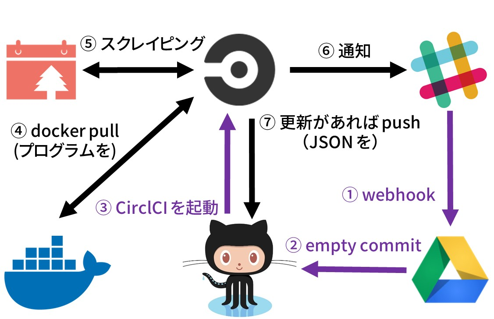
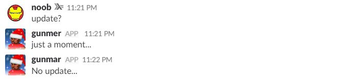

Re: ゼロから作る ADVENTAR の Slack Bot (GAS 編)
IGGG アドベントカレンダー 2017 の16日目の記事です．
前後編で終わると言ったが，あれはウソだ！
- Re: ゼロから作る ADVENTAR の Slack Bot (Haskell 編) - ひげメモ
- Re: ゼロから作る ADVENTAR の Slack Bot (CircleCI 編) - ひげメモ
ADVENTAR の更新を通知する Slack Bot を Haskell で作って，Circle CI で回すとこまでは話した． 一応話はそこでお終いだが「Bot なんだから Slack 側からのアクションも受け取れろよ！」みたいな圧力を受けた(嘘)ので，今回はそこら辺を何とかした話です．
戦略
もちろん，弊サークルは貧者なので Google Apps Script を使う． 戦略は簡単，GAS から GitHub に向けて空コミットを送る だけ． そのコミットで CircleCI が動き出す (完)

作る
GAS で Slack Bot
Slack から受け取るときは Outgoing Webhooks を使う． 適当にトリガーワードを決める(今回は update?)． そのワードが設定したチャンネルで打たれると，空コミットを送るのだ．
ただ，打ってから結果を CircleCI が返すまで1分ほどかかるので「ちょっと待って」って感じのメッセージを送ることにしよう． そこで，いつものやつ．
こんな感じ
function doPost(e) {
var prop = PropertiesService.getScriptProperties().getProperties();
if (prop.VERIFY_TOKEN != e.parameter.token) {
throw new Error('invalid token.');
}
/* for Slack */
var slackApp = SlackApp.create(prop.SLACK_API_TOKEN);
const BOT_NAME = 'gunmer';
const BOT_ICON = 'http://drive.google.com/uc?export=view&id=' + prop.ICON_ID;
var option = { username : BOT_NAME, icon_url : BOT_ICON, link_names : 1 };
var channelName = e.parameter.channel_name;
Logger.log(slackApp.postMessage(channelName, 'just a moment...', option));
}ちなみに，doPost 関数を呼び出す関数を用意して，テストではそいつを実行するとデバッグがはかどる．
function test() {
var prop = PropertiesService.getScriptProperties().getProperties();
var e = {
parameter: {
token: prop.VERIFY_TOKEN,
text: 'update?',
channel_name: 'bot-test'
}
}
doPost(e);
}GAS で GitHub API
GitHub に任意のコミットを出すためには，GitHub API の Git Data を使う．
GitHub API を GAS で簡単に扱うために昔作ったライブラリがあるので，コレを使えば良い(ググったら他にもあったけど，Git Data は未実装っぽい)． 昔のオレ Good job !
使い方については昔書いた記事を参考にして．
取りあえずは，こんな感じにすれば準備OK．
function doPost(e) {
var prop = PropertiesService.getScriptProperties().getProperties();
if (prop.VERIFY_TOKEN != e.parameter.token) {
throw new Error('invalid token.');
}
/* push empty commit */
var option = { name: prop.NAME, email: prop.EMAIL };
var github = new GitHubAPI.GitHubAPI(prop.GITHUB_USERNAME, prop.GITHUB_REPO, prop.GITHUB_TOKEN, option);
...
}Commit 用の名前(prop.NAME)とメールアドレス(prop.EMAIL)に，API を叩くためのトークン(prop.GITHUB_TOKEN)と，API を叩く先のアカウント(prop.GITHUB_USERNAME)とリポジトリ(prop.GITHUB_REPO)をスクリプトのプロパティに定義してある(直接書いたって良い)．
空コミットを出す
Git は blob, tree, commit， tag の4つのオブジェクト(ファイル)を使って過去のデータなどを管理している． blob はファイルそのもの，tree はディレクトリ構造，commit と tag は名前の通りコミットとタグを表している． また，どの種類のオブジェクトも SHA-1 ハッシュ値で名前付けされている．
コミットを出すには，commit オブジェクトを作る必要があり，その中には親コミットと tree オブジェクトの SHA-1 が書かれている． では空コミットの場合はどうなるのか． 簡単だ，親コミットと同じ tree オブジェクトを中に書けばよい ．
function doPost(e) {
...
var github = new GitHubAPI.GitHubAPI(prop.GITHUB_USERNAME, prop.GITHUB_REPO, prop.GITHUB_TOKEN, option);
var branch = github.getBranch(prop.GITHUB_BRANCH);
var pcommit = branch['commit']['sha'];
var ptree = branch['commit']['commit']['tree']['sha'];
var commit = github.createCommit('empty!', ptree, pcommit);
github.updateReference(prop.GITHUB_BRANCH, commit['sha'])
...
}最後にしてるのは，ブランチ指しているコミットの更新である．
完成

おしまい
今回は少なめ． というかすごく簡単にできた． 昔のオレ Good job !!